Tutorial¶
Overview¶
This tutorial is a guide to the use of the Sawtooth Lake Bond Family user interface (UI).
Considerations¶
The Sawtooth Bond Family UI runs in a cloud-based instance that is installed, configured and maintained by Intel. You do not need to install any specialized sofware on your computer.
Supported Browsers¶
The following web browsers are supported:
- Firefox version 47.0+
- Chrome version 52.0+
- Safari version 9.1+
- Internet Explorer version 11+
Supported Tasks¶
You can perform the following tasks in the Sawtooth Bond Family UI:
Account Creation and Updates¶
Buying and Selling¶
Holdings and Transactions¶
Administrative¶
Tasks Not Supported by the UI¶
Certain tasks are not supported by the UI, but can be performed using the command-line interface (CLI). For example, bond redemption can be accomplished with the CLI.
See the CLI reference guide for information on performing tasks not supported by the UI, but which are supported by the CLI.
Create an Account¶
The first time you sign in to the Sawtooth Lake Bond UI, you need to create your account. During this process, you generate a new wallet import format (WIF) key, or import an existing WIF key. Your key is used to identify participants and sign transactions.
Note
If you sign out, or need to sign in from another browser, simply follow the procedure below entitled Sign in with Existing Account.
Creating an Account with a New Key¶
To create an account with a new WIF key:
Navigate to the URL of the Bond UI instance.
Click Generate WIF.
Save your WIF key using one of the following methods:
- Click Download Key to download the WIF key to your local filesystem.
- Sarafi does not support downloading the WIF key.
- Alternatively, copy the WIF key to your clipboard by clicking Copy Key to Clipboard.
Store your WIF key in safe location. It is needed in order to:
- Sign in to the UI from another browser or computer
- Sign in after deleting the site cookie
Click Create Participant.
- The Create Participant page loads:
Create a username.
Select a firm from the Firm dropdown.
Click the Create Participant button.
- To leave the Create Participant page without creating an account, click Cancel.
- During account creation, the browser displays:
The main Bond UI page loads.
Creating an Account with an Existing Key¶
To create an account with an existing WIF key:
Navigate to the URL of the Bond UI instance.
Click Import WIF.
- The Import WIF Key page loads:
Input your WIF key using one of two methods:
Paste the WIF key into the text box.
Click Upload WIF File, navigate to the WIF key file, then select the file.
Note
The Upload WIF File button does not work in Firefox. Use the paste option if you use Firefox.
Click Submit.
- The Create Participant page loads:
Create a username.
Select a firm from the Firm dropdown.
Click the Create Participant button.
- To leave the Create Participant page without creating an account, click Cancel.
- During account creation, screen will display:
The main Bond UI page loads.
Sign in with Existing Account¶
You can sign in to the Bond UI as an existing user.
To sign in as an existing user:
Navigate to the URL of the Bond UI instance.
Click Import WIF.
- The Import WIF Key page loads:
Input the WIF key associated with the existing user using one of two methods:
Paste the WIF key into the text box
Click Upload WIF File, navigate to the WIF key file, then select the file.
Note
The Upload WIF File button does not work in Firefox. Use the paste option if you use Firefox.
Click Submit.
- You are now signed in as the existing user or participant.
Note
The tasks below assume that you are already signed in as a participant.
View Bonds¶
The UI allows you to view bonds, and to search for bonds based on various search criteria.
View All Bonds¶
You can view all bonds stored in the distributed ledger by following these steps:
Select Bonds from the top menu bar.
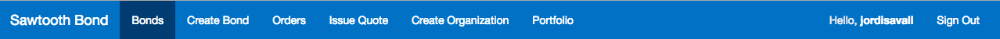The list of bonds is displayed:
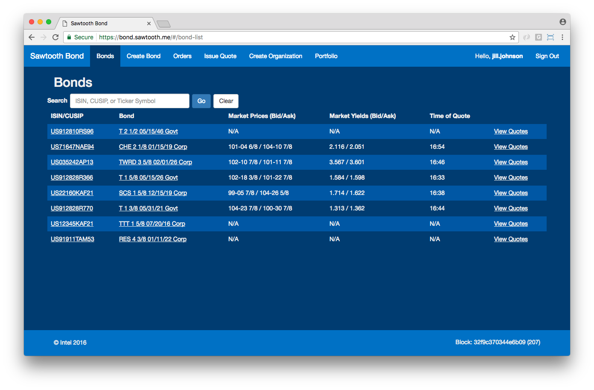
Search For Specific Bonds¶
You can search for bonds based on the following criteria:
- ISIN
- CUSIP
- Ticker Symbol
To search for bonds based based on your search criteria:
Enter the ISIN, CUSIP, or ticker symbol in the Search field.
Click Go.
- The list of matching bonds is displayed:
To start a new search:
- Click Clear.
- Enter the new search term.
- Click Go.
Note
From the Bonds page, you can view quotes.
Create Bond¶
If you have the market maker role, you can create bonds:
Select Create Bond from the top menu bar.
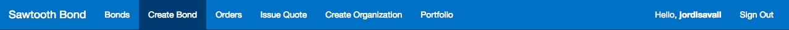Fill in the required fields on the Create Bonds page, then press the Create Bond button, or press Reset to clear fields:
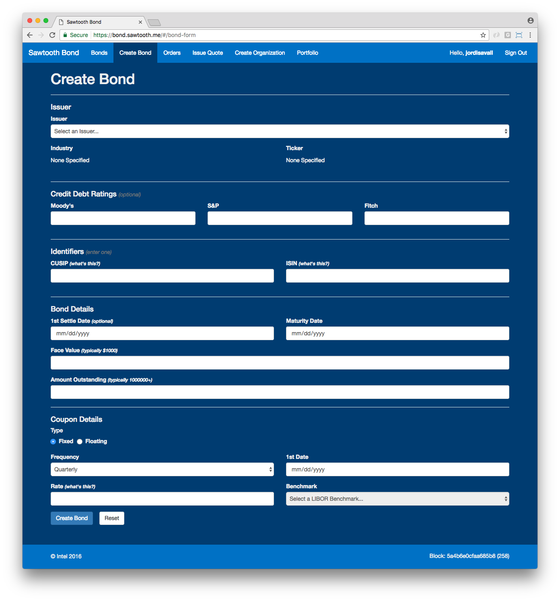
Issue a Quote¶
You can can issue quotes, which are submitted to the distributed ledger. They can then be matched with orders submitted by other particpants.
To issue a quote:
Select Issue Quote from the top menu bar.
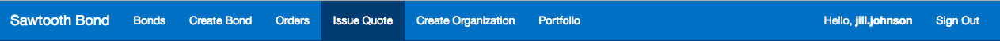Select a bond from the CUSIP/ISIN drop-down.
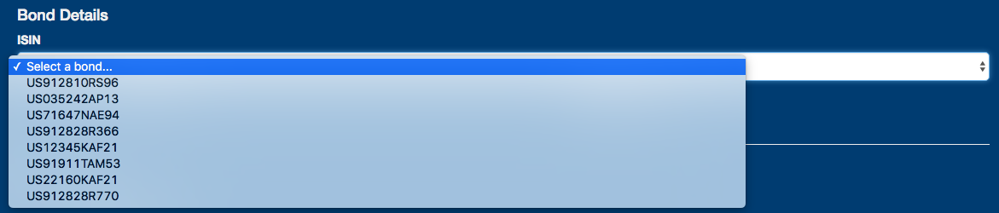Fill in the following text boxes under Quote Details:
- Bid Price
- Ask Price
- Bid Quantity
- Ask Quantity
Click Issue to submit the quote.
- To cancel the quote and reset the page, click Reset.
The View Quotes page displays the newly issued quote:

View Quotes¶
You can view quotes from the Bonds page.
To view the quotes associated with a bond:
Select Bonds from the top menu bar.
- A list of available bonds is displayed.
Click the View Quotes link:
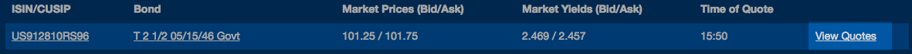The View Quotes page for the chosen bond is displayed:
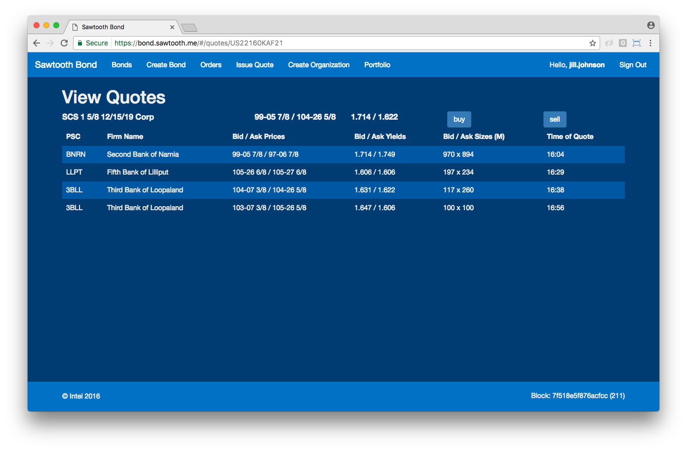
Create an Order¶
Participants can create buy and sell orders, which are then be matched against quotes that meet the order’s criteria.
To create an order:
Follow the steps above to view the quotes available for the bond you want to buy or sell.
Click the buy or sell button from the View Quotes page:
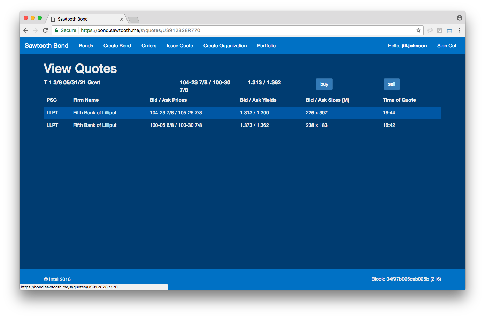- The Buy/Sell Order page loads:
Fill in the following fields:
- Quantity
- Best Price (optional)
- Best Yield (optional)
Click Create Order
- The View Orders page is displayed, and includes your submitted order:
Settle a Matched Order¶
When an order and a quote are matched by the bond transaction family, the order can be settled by an authorized participant.
To settle a matched order:
Select Orders from the top menu bar.
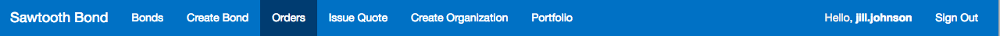- The View Orders page is displayed:
- If an order is matched with a quote, a settle button appears in the last column of the order’s row.
Click the settle button for each matched order that you want to settle.
- The settlement request is submitted.
- Once the request is accepted, the View Orders page is refreshed, and the list of orders available for settlement is updated:
Create Organization¶
To create a new organization:
Select Create Organization from the top menu bar.
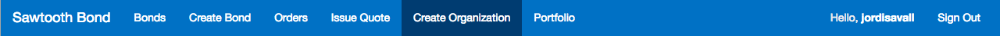- The Create Organization page is displayed.
Fill in the following fields:
- Name
- Industry (Optional)
Enter one of the two following fields:
Ticker
- Entering a ticker creates an issuing org.
- Bonds are issued against orgs with tickers.
Pricing Source
- Entering a pricing source creates a trading firm.
- Trading firms can issue quotes, perform trades, etc.
Note
If you create a trading firm, your participant will be be removed from any previous trading firm, and placed in the new one.
Update User Account¶
You can update your user account. To update your account:
Click your username from the top menu bar.
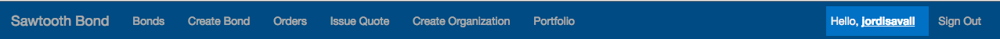- The Update Participant page is displayed:
Update desired fields in the available text boxes, then press Update.
View Portfolio¶
You can view your holdings and transactions from the Portfolio page.
Select Portfolio from the top menu bar:
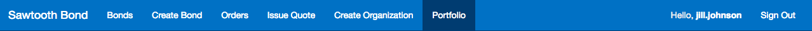- the Portfolio page loads:
Select one of the following categories to view:
- Holdings
- Receipts
- Settlements
The selected category is displayed.